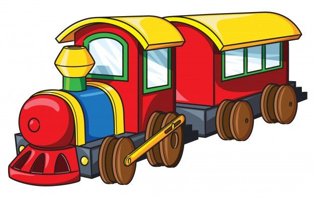

FERROCARRIL
Desde el siglo XIX, los trenes son fundamentales para el transporte de personas y mercancías, combinando eficiencia y gran capacidad.
SERVICIO METRO
En el corazoón urbano, estos trenes eléctricos ofrecen transporte de alta frecuencia, vertebrando la movilidad eficiente de grandes ciodades.
© 2025 Mundo Tren